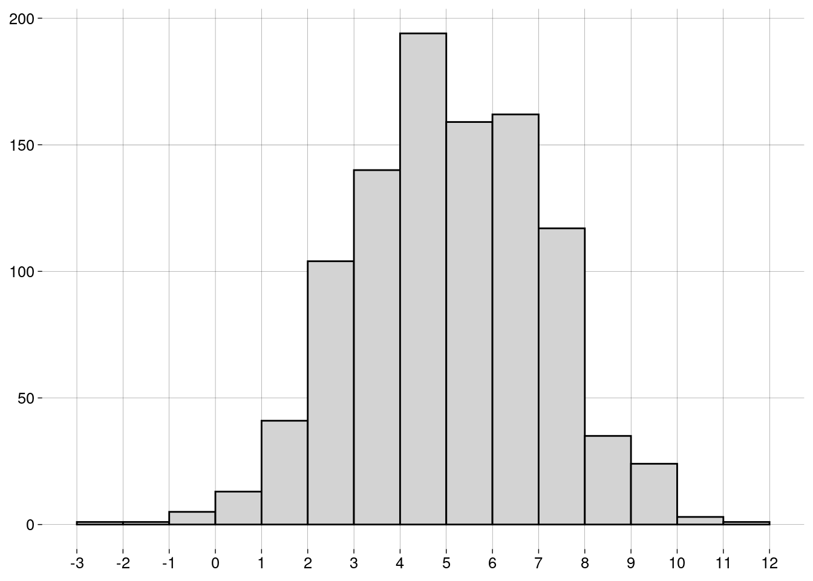
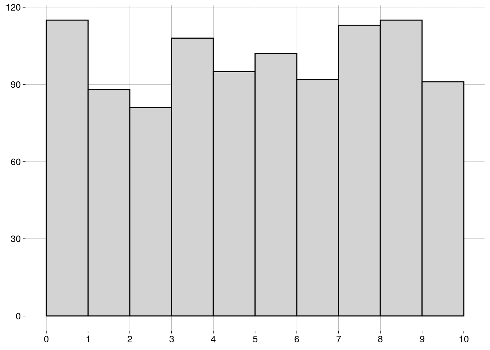
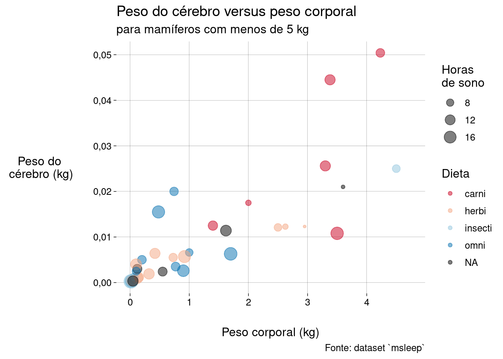

Capítulo 6 Medidas
6.2 Medidas de centralidade
6.2.1 Média
-
A média de uma população é escrita como \(\mu\), e é definida como \[\mu = \frac{\sum_{i=1}^N x_i}{N}\]
\(\sum_{i=1}^N x_i\) é a soma de todos os dados da população.
\(N\) é a quantidade de elementos na população.
-
A média de uma amostra é escrita como \(\bar x\), e é definida como: \[\bar x = \frac{\sum_{i=1}^n x_i}{n}\]
\(\sum_{i=1}^n x_i\) é a soma de todos os dados da amostra.
\(n\) é a quantidade de elementos na amostra.
O cálculo é essencialmente o mesmo. Só mudam os símbolos: \(N\) versus \(n\), e \(\mu\) versus \(\bar x\).
6.2.2 Mediana
Já aprendemos sobre a mediana na seção sobre boxplots.
A idéia é que, depois de ordenar os dados, \(50\%\) dos dados estarão à esquerda da mediana, e \(50\%\) à direita.
A mediana não é tão sensível a outliers quanto à média.
6.2.3 Moda
A moda é o valor mais frequente do conjunto de dados.
Pode haver mais de uma moda.
Não existe uma função para a moda em R base. Por quê?
Por incrível que pareça, é complicado definir a moda de forma a conseguir resultados interessantes.
-
Por exemplo, vamos definir um conjunto de \(1000\) valores numéricos distribuídos normalmente4, com média igual a \(5\) e desvio-padrão5 igual a \(2\):
normal <- rnorm(1000, mean = 5, sd = 2) -
O histograma dos nossos dados é
 -
Vamos calcular a moda com a função
mfv(most frequent value), do pacotemodeest:## Registered S3 method overwritten by 'rmutil': ## method from ## print.response httr# Por causa de um bug na função mfv, # precisamos de números com ponto decimal # (em vez de vírgula): options(OutDec = '.') mfv(normal)## [1] -2.56549150 -2.13019185 -1.65352957 -1.24491778 -0.51059038 -0.48506892 ## [7] -0.32395686 -0.28315337 -0.13351769 -0.06357298 0.11858391 0.13073159 ## [13] 0.14902643 0.21287597 0.21311967 0.24631794 0.27429735 0.34433751 ## [19] 0.35013194 0.37251197 0.44430182 0.53459306 0.58738251 0.66124649 ## [25] 0.70872999 0.85238279 0.89992693 0.92682544 0.93783280 0.94637988 ## [31] 0.97048990 0.97821462 1.05487968 1.06534642 1.07175189 1.08185643 ## [37] 1.10096011 1.14832865 1.17036608 1.23051951 1.25607241 1.26197005 ## [43] 1.29215066 1.29361457 1.32707299 1.36075598 1.36161529 1.45740597 ## [49] 1.47554134 1.49160706 1.52598460 1.53403394 1.53720860 1.54230428 ## [55] 1.54240550 1.55252117 1.58939715 1.65050322 1.65374967 1.67691083 ## [61] 1.68117268 1.69377886 1.70855054 1.72575660 1.77577956 1.80477995 ## [67] 1.81028109 1.82004666 1.91581229 1.94790594 1.96839088 2.00424591 ## [73] 2.01797757 2.02062582 2.03287340 2.06809629 2.08206255 2.11461807 ## [79] 2.12853186 2.14371477 2.15599944 2.15787245 2.16344898 2.17306601 ## [85] 2.17957766 2.17997886 2.18477450 2.22840916 2.23009312 2.23238094 ## [91] 2.28620134 2.29081769 2.31880591 2.32582582 2.33480685 2.33906824 ## [97] 2.34300250 2.35083494 2.38147893 2.40239851 2.41749054 2.41910363 ## [103] 2.44453926 2.46435525 2.48466472 2.49318998 2.49487474 2.49992648 ## [109] 2.52637296 2.53056031 2.53671139 2.56841854 2.59907545 2.64690949 ## [115] 2.64843534 2.66091616 2.66527083 2.67665745 2.68702779 2.69323973 ## [121] 2.69385799 2.71756593 2.77700837 2.79080126 2.79123557 2.80619450 ## [127] 2.81082257 2.81995356 2.83456709 2.84034205 2.85342779 2.85891596 ## [133] 2.86635290 2.87171379 2.87208614 2.89774975 2.89918896 2.90034666 ## [139] 2.91345982 2.93081539 2.93548069 2.93574201 2.93901897 2.95001786 ## [145] 2.95028756 2.95988789 2.96195888 2.97055199 2.98577882 2.98995761 ## [151] 2.99312376 3.00308133 3.00340082 3.00682246 3.01114616 3.03713139 ## [157] 3.03878027 3.05264697 3.07407894 3.07427848 3.08343019 3.08395009 ## [163] 3.08565929 3.09243805 3.09551733 3.09912160 3.10350409 3.10743475 ## [169] 3.11472050 3.12017850 3.16390444 3.17738003 3.18122555 3.18394940 ## [175] 3.18664825 3.19148151 3.19269966 3.20121301 3.20677731 3.20783661 ## [181] 3.20808942 3.20827822 3.22826912 3.25201255 3.26484623 3.27015260 ## [187] 3.27820595 3.28203929 3.29133900 3.30049349 3.30447510 3.30600035 ## [193] 3.30618473 3.31370873 3.32807219 3.33023681 3.35110757 3.35925030 ## [199] 3.36026965 3.36693362 3.38820065 3.39008354 3.39662538 3.43779785 ## [205] 3.44814231 3.45689792 3.45739132 3.46091725 3.46351361 3.47044972 ## [211] 3.47294951 3.47419979 3.48751594 3.48861055 3.50367203 3.51533549 ## [217] 3.53704391 3.53841915 3.54844633 3.55349256 3.55567129 3.56180150 ## [223] 3.56996472 3.57137193 3.57173814 3.57344429 3.57379043 3.58518140 ## [229] 3.59223253 3.59588550 3.60364680 3.60619060 3.60882261 3.62029678 ## [235] 3.62404479 3.64148391 3.64259760 3.64326293 3.64399432 3.65213292 ## [241] 3.65498329 3.65714339 3.65981274 3.66395838 3.66416853 3.66755362 ## [247] 3.68869591 3.69049790 3.69574887 3.69868316 3.70157870 3.70332878 ## [253] 3.70994103 3.73813836 3.74315766 3.74725300 3.74903885 3.75748561 ## [259] 3.76233792 3.76403213 3.76421256 3.76432035 3.77954907 3.79254032 ## [265] 3.80844004 3.81336847 3.85474315 3.85738119 3.86019646 3.86450046 ## [271] 3.87955712 3.88776446 3.89771798 3.91012544 3.91963316 3.92454839 ## [277] 3.93050652 3.93677644 3.93705738 3.95057050 3.95274230 3.95881377 ## [283] 3.97507757 3.97573880 3.98208137 3.98622989 3.98897303 3.98947316 ## [289] 3.99496860 3.99525790 4.00094576 4.00332470 4.00391901 4.00569671 ## [295] 4.01017457 4.01438466 4.01776119 4.03133837 4.03716475 4.03721450 ## [301] 4.07109525 4.08456911 4.09380972 4.09457994 4.09780757 4.10659875 ## [307] 4.11031799 4.12255998 4.12480523 4.12600785 4.12728363 4.12954659 ## [313] 4.13395743 4.13631327 4.14341756 4.14788521 4.15554817 4.15703026 ## [319] 4.15882284 4.15985514 4.16535021 4.16651715 4.17222991 4.17646314 ## [325] 4.18303422 4.19779094 4.20568188 4.21527177 4.21534170 4.21809185 ## [331] 4.22526863 4.23124806 4.23320737 4.23394399 4.23684604 4.26111976 ## [337] 4.26670604 4.26696923 4.26888233 4.27016065 4.28580589 4.29355816 ## [343] 4.29679461 4.29707708 4.29828155 4.30950005 4.30965456 4.31214185 ## [349] 4.31408763 4.31461209 4.32781883 4.32869454 4.35252034 4.35415936 ## [355] 4.35625667 4.35800751 4.36603478 4.36811640 4.36888180 4.37597509 ## [361] 4.37846815 4.37927257 4.38208185 4.38488380 4.39474148 4.39606506 ## [367] 4.40607183 4.41384330 4.42003700 4.42662965 4.42921207 4.43162727 ## [373] 4.44392159 4.44636047 4.44826690 4.45102100 4.45325248 4.46392933 ## [379] 4.48062782 4.48305309 4.49089832 4.49881223 4.51483974 4.51650916 ## [385] 4.51697792 4.52027061 4.52854096 4.53186290 4.53999312 4.54662695 ## [391] 4.55243756 4.55245794 4.57112754 4.58204764 4.60005432 4.60076733 ## [397] 4.60142737 4.60315358 4.61424757 4.61994441 4.62290007 4.62527120 ## [403] 4.62588754 4.63189595 4.64276236 4.65104922 4.65489594 4.66007776 ## [409] 4.66776146 4.67646556 4.68017223 4.68289037 4.68420276 4.69398183 ## [415] 4.69476657 4.70310197 4.70678784 4.71580497 4.71769664 4.71813732 ## [421] 4.72007082 4.72129361 4.72524122 4.73232140 4.73289329 4.73751218 ## [427] 4.74156755 4.74279756 4.74931068 4.75101476 4.75725645 4.76442296 ## [433] 4.77425086 4.77636502 4.77673257 4.77792204 4.78107249 4.78532723 ## [439] 4.78817366 4.79256923 4.80312796 4.80489266 4.80517727 4.80655240 ## [445] 4.81028573 4.81607275 4.81683126 4.81859107 4.82116892 4.82514700 ## [451] 4.82595475 4.83202110 4.83632195 4.83680406 4.83771752 4.84793288 ## [457] 4.86416560 4.86589933 4.86948228 4.87079163 4.87146691 4.87392273 ## [463] 4.87709912 4.87769288 4.88192350 4.88655936 4.92315669 4.93297671 ## [469] 4.93355799 4.93591191 4.93788743 4.93914231 4.95449264 4.95555680 ## [475] 4.96036920 4.96234054 4.96685271 4.96697564 4.97303685 4.97344004 ## [481] 4.98235768 4.98685531 4.98809300 5.00476882 5.00814475 5.01118849 ## [487] 5.01495112 5.02144875 5.04210677 5.04486655 5.04808037 5.05336364 ## [493] 5.05726185 5.06466831 5.06921302 5.07304726 5.07922779 5.08190780 ## [499] 5.08663003 5.09787121 5.09792815 5.11655261 5.11733596 5.12666748 ## [505] 5.12997261 5.13042379 5.13230558 5.14475218 5.14973489 5.15187509 ## [511] 5.15225083 5.15396239 5.15564026 5.16160457 5.17072034 5.17155088 ## [517] 5.17395369 5.19911613 5.20581955 5.21830298 5.23045846 5.23654344 ## [523] 5.24340851 5.24398889 5.24748868 5.25043626 5.25571075 5.25907675 ## [529] 5.26097772 5.26641137 5.26751365 5.26853742 5.26930260 5.29843829 ## [535] 5.29918836 5.30480256 5.31821843 5.32175356 5.32399622 5.34734227 ## [541] 5.34766794 5.35071933 5.35381823 5.36239034 5.36930704 5.37294557 ## [547] 5.37720348 5.38208566 5.38601920 5.38844438 5.39288083 5.39295964 ## [553] 5.39803718 5.40059133 5.40372528 5.42079832 5.43229783 5.44561930 ## [559] 5.44716595 5.45728571 5.45935814 5.46434347 5.47256373 5.47671530 ## [565] 5.48281290 5.49650258 5.50055594 5.50116575 5.50146249 5.50208822 ## [571] 5.50255710 5.50361953 5.50390520 5.50482525 5.50644855 5.51183046 ## [577] 5.51855928 5.52704405 5.53159290 5.53600332 5.54578254 5.55007996 ## [583] 5.55317930 5.55604726 5.56256969 5.56656940 5.56746915 5.57522301 ## [589] 5.57932460 5.58013476 5.58469478 5.58781540 5.58872340 5.59111120 ## [595] 5.60026442 5.60063693 5.60740702 5.60900657 5.62343008 5.62766202 ## [601] 5.62980569 5.63298843 5.63711912 5.63968218 5.64548494 5.65050088 ## [607] 5.65593186 5.65745700 5.66132299 5.66185276 5.66298875 5.66604254 ## [613] 5.66760566 5.66860755 5.67264932 5.67496729 5.68717088 5.68741591 ## [619] 5.69647338 5.69925056 5.70119881 5.70381225 5.71451818 5.71577639 ## [625] 5.71620194 5.71861474 5.72241281 5.72877625 5.73006546 5.73115487 ## [631] 5.73378281 5.74491443 5.75222684 5.75272196 5.75339678 5.75758208 ## [637] 5.76729808 5.76945917 5.77032788 5.77291920 5.78043541 5.78359282 ## [643] 5.78983594 5.79430397 5.79849092 5.79954927 5.80339303 5.80515518 ## [649] 5.81038030 5.81546470 5.82015111 5.82481841 5.82924544 5.83085977 ## [655] 5.83831277 5.83915800 5.84699504 5.85498330 5.85617396 5.86586278 ## [661] 5.87210991 5.87964855 5.88359945 5.90069124 5.90099172 5.90256924 ## [667] 5.91118666 5.92876918 5.94928703 5.95173859 5.95758813 5.96623163 ## [673] 5.96699077 5.97706609 5.97867558 5.97963998 5.98058276 5.98459467 ## [679] 5.99030135 5.99314800 5.99825594 6.00239774 6.00491900 6.00779266 ## [685] 6.01274857 6.01594378 6.02840440 6.04745598 6.04750401 6.05011182 ## [691] 6.05505373 6.06505805 6.06614784 6.07249312 6.08078150 6.08258731 ## [697] 6.08287584 6.08747146 6.10015218 6.10053343 6.10118317 6.10591606 ## [703] 6.10942052 6.11068841 6.11296132 6.11363040 6.11880800 6.12154472 ## [709] 6.12181652 6.12332337 6.12478191 6.12915549 6.13548966 6.14611352 ## [715] 6.15359474 6.15702100 6.15845483 6.15913721 6.16716229 6.16746541 ## [721] 6.16858056 6.17319578 6.17835666 6.18058874 6.18238138 6.18278410 ## [727] 6.19344501 6.21099243 6.21347826 6.21361399 6.21816013 6.22641313 ## [733] 6.23597455 6.23979973 6.24763142 6.24795073 6.25063481 6.25138092 ## [739] 6.27897280 6.28456499 6.30245996 6.30744706 6.32183224 6.32882778 ## [745] 6.33041491 6.33940503 6.34052602 6.35513385 6.36129897 6.36219152 ## [751] 6.36316398 6.37532358 6.39651574 6.39828860 6.40093278 6.40301916 ## [757] 6.40808867 6.40866903 6.41730148 6.43276726 6.44676869 6.45667698 ## [763] 6.45998612 6.47339302 6.48242626 6.48389779 6.48754455 6.49230400 ## [769] 6.50177826 6.50976691 6.51185475 6.51508122 6.52458562 6.53373389 ## [775] 6.53494179 6.53607707 6.53903048 6.55170664 6.55301950 6.56399337 ## [781] 6.57440658 6.57745210 6.58022846 6.58956673 6.59088687 6.59223674 ## [787] 6.59570344 6.60239815 6.60303694 6.62282574 6.62499769 6.62896225 ## [793] 6.63878007 6.65228130 6.65517165 6.66204875 6.67204561 6.67786092 ## [799] 6.67972287 6.68569422 6.68704088 6.68959038 6.69146547 6.69589298 ## [805] 6.69811010 6.70523329 6.71526142 6.71678340 6.71937767 6.72361139 ## [811] 6.74107985 6.74154785 6.74518193 6.75705445 6.76700577 6.78663513 ## [817] 6.79060852 6.79305858 6.79541518 6.80065265 6.81057362 6.82303768 ## [823] 6.82990792 6.84234541 6.84279632 6.84486353 6.84914948 6.85171919 ## [829] 6.86554982 6.86658118 6.87768575 6.88881446 6.88949658 6.89899081 ## [835] 6.90203857 6.90618619 6.91119268 6.92174149 6.93205361 6.93629938 ## [841] 6.95337140 6.95517248 6.97818124 6.99123785 7.01276298 7.01588607 ## [847] 7.02656490 7.04022476 7.05534548 7.06196793 7.06263899 7.06872457 ## [853] 7.06902900 7.07376248 7.07897643 7.08279887 7.09020931 7.09288134 ## [859] 7.09778734 7.10802344 7.11611769 7.12183841 7.13016777 7.13825294 ## [865] 7.14106173 7.15837327 7.16572938 7.16665259 7.19583225 7.19754954 ## [871] 7.21171303 7.21231987 7.21348132 7.22664298 7.22785497 7.23760040 ## [877] 7.24136058 7.24210051 7.24844196 7.25162065 7.26251045 7.26347183 ## [883] 7.27132696 7.28960523 7.29705417 7.30518159 7.30774058 7.33461781 ## [889] 7.35061614 7.36378994 7.38668741 7.39440070 7.40255103 7.40336471 ## [895] 7.42442411 7.42495625 7.47316981 7.47831964 7.47924612 7.48146121 ## [901] 7.51518482 7.53432807 7.53513651 7.53943725 7.55546569 7.56862207 ## [907] 7.57768063 7.64651503 7.66729204 7.69487228 7.71150132 7.71517034 ## [913] 7.71709532 7.72021042 7.72403878 7.72680841 7.75395606 7.75933720 ## [919] 7.76160201 7.76310686 7.79743185 7.81526896 7.82725976 7.90234346 ## [925] 7.90646580 7.91070113 7.91790993 7.91877142 7.92271504 7.93846583 ## [931] 7.94072470 7.95108013 7.95261374 7.95944924 7.96167424 7.97166273 ## [937] 8.01522235 8.05082194 8.06243392 8.08299519 8.09866186 8.10158087 ## [943] 8.11784048 8.12652878 8.13978107 8.18707803 8.18975735 8.19950423 ## [949] 8.21075468 8.22595450 8.24015628 8.25786885 8.26026294 8.27534631 ## [955] 8.28251101 8.29692245 8.31742758 8.32222586 8.41421868 8.44014592 ## [961] 8.44639706 8.49897460 8.52202245 8.58369587 8.58539217 8.59626902 ## [967] 8.62786160 8.64639980 8.66725105 8.68137005 8.68521003 8.69370872 ## [973] 8.71402418 8.73039378 8.78821314 8.80949208 8.87922715 8.90047973 ## [979] 8.90634135 8.91204264 8.94559989 9.14080929 9.16146521 9.17780563 ## [985] 9.17848211 9.31505012 9.41308724 9.68837954 9.73674464 9.77516745 ## [991] 9.89045943 10.29153846 10.41171992 10.44784960 10.57718867 10.59204718 ## [997] 10.72233768 10.76193991 11.21139758 13.55732567# Voltamos para a vírgula como separador decimal: options(OutDec = ',') O que houve?!
O problema é que não há valores repetidos no conjunto de dados! Por isso, todos os \(1000\) valores são modais.
-
Uma maneira de evitar isto é definir a moda como o centro do intervalo mais curto que contém metade dos dados. Usamos a função
mlv(most likely value):moda <- mlv(normal, method = 'venter') moda## [1] 5,402354 -
Esta moda estimada pode nem estar no conjunto de dados:
moda %in% normal## [1] FALSE Mas o resultado de
mlv()é útil, pois nos diz que, embora não haja valores repetidos, valores próximos de \(5\) são mais frequentes, como mostra o histograma.
6.2.3.1 Exercícios
-
Arrendonde os valores no vetor
normalpara \(2\) casas decimais e ache a(s) moda(s)com a função
mfv, ecom a função
mlv, usando o métodoventer.
Considerando o histograma, qual das respostas você prefere? Por quê?
6.3 Formas de uma distribuição
- A forma do histograma mostra aspectos importantes da distribuição dos dados.
6.3.1 Distribuição Uniforme
-
Se o histograma tem todas as barras aproximadamente da mesma altura, dizemos que a distribuição é uniforme:
 A distribuição uniforme não tem moda, já que todos os valores têm aproximadamente a mesma frequência.
6.3.2 Simetria
Se o histograma for simétrico (i.e., os lados esquerdo e direito são “espelhados”), dizemos que a distribuição é simétrica.
A distribuição normal do exemplo acima é simétrica.
A distribuição uniforme também é simétrica.
-
Para distribuições simétricas, a média, a mediana e a moda (quando existe e é única) são bem próximas.
-
Uma distribuição pode ser simétrica, mas ter duas (ou mais) modas diferentes:

Algumas distribuições não são simétricas, mas têm uma cauda longa à esquerda ou à direita.
Dependendo da cauda, as distribuições são chamadas de assimétricas à esquerda ou assimétricas à direita.
-
Um exemplo: receitas anuais (em milhões de dólares) de CEOs de grandes empresas:
df <- read_csv( './data/CEO_Salary_2012.csv', show_col_types = FALSE ) glimpse(df)## Rows: 500 ## Columns: 9 ## $ Rank <dbl> 1, 2, 3, 4, 5, 6, 7, 8, 9, 10, 11, 12, 13, 14, 15, 16… ## $ Name <chr> "John H Hammergren", "Ralph Lauren", "Michael D Fasci… ## $ Company <chr> "McKesson", "Ralph Lauren", "Vornado Realty", "Kinder… ## $ `1-Year Pay ($mil)` <dbl> 131,190, 66,650, 64,405, 60,940, 55,790, 51,525, 50,1… ## $ `5 Year Pay ($mil)` <dbl> 285,020, 204,060, NA, 60,940, 96,110, 100,210, 90,300… ## $ `Shares Owned ($mil)` <dbl> 51,9, 5010,4, 171,7, 8582,3, 21,5, 47,3, 128,2, 155,8… ## $ Age <dbl> 53, 72, 55, 67, 59, 57, 55, 59, 61, 60, 59, 56, 63, 5… ## $ Efficiency <dbl> 121, 84, NA, NA, 138, 36, 12, NA, 91, 131, 150, NA, 1… ## $ `Log Pay` <dbl> 8,117901, 7,823800, 7,808920, 7,784902, 7,746556, 7,7… -
Vamos usar apenas os nomes e os valores anuais:
salarios <- df %>% select(Name, valor = `1-Year Pay ($mil)`) -
Um histograma:
salarios %>% ggplot(aes(x = valor)) + geom_histogram(breaks = seq(0, 150, 2.5)) + scale_x_continuous(breaks = seq(0, 150, 10)) + labs(y = NULL)
É uma distribuição assimétrica à direita: a maior parte dos CEOs têm receitas anuais “baixas”, de menos de \(10\) milhões. À medida que examinamos valores maiores, a quantidade de CEOs vai diminuindo lentamente.
Observe que a longa cauda à direita “puxa” a média para um valor mais alto do que a mediana.
-
A moda, que corresponde à barra mais alta do histograma, é menor que a mediana (e que a média):
sumario <- salarios %>% summarise( moda = mlv(valor, method = 'venter'), mediana = median(valor), media = mean(valor) ) sumario -
Em um boxplot, também é possível detectar a assimetria pela grande quantidade de outliers em um extremo:
salarios %>% ggplot(aes(y = valor)) + geom_boxplot() + scale_x_continuous(breaks = NULL) + scale_y_continuous(breaks = seq(0, 150, 10))
Com distribuições assimétricas à esquerda, a situação se inverte: a média é menor que a mediana, que é menor que a moda.
6.4 Re-expressão
Muitas vezes, é recomendável transformar a escala dos dados para que uma distribuição assimétrica se torne simétrica.
-
No exemplo das receitas dos CEOs, podemos tomar os logaritmos dos valores, em vez dos valores:
salarios_log %>% ggplot(aes(x = log_valor)) + geom_histogram(bins = 20) + labs( x = TeX('$\\log_{10}$ valor'), y = NULL )## Warning: Removed 3 rows containing non-finite values (stat_bin).
O logaritmo de um número na base \(10\) é, essencialmente, a quantidade de dígitos do número, vista como uma grandeza contínua.
Logaritmos negativos vêm de valores entre \(0\) e \(1\).
Logaritmo zero vem do valor \(1\).
Valores iguais ou menores que zero não têm logaritmo definido.
-
Por isso a mensagem de aviso sobre \(3\) valores removidos. São valores iguais a zero:
Uma vantagem desta escala logarítmica é que podemos entender melhor o histograma. Os dados não estão amontoados de um lado só.
6.5 Medidas de posição
6.5.1 Quantis
Na seção sobre boxplots, falamos sobre quantis, que são medidas de posição.
-
Em R, a função
quantilecalcula quantis de um vetor:## 0% 25% 50% 75% 100% ## 0,00000 3,88500 6,96750 13,36125 131,19000 -
Você pode passar frações entre \(0\) e \(1\) para
quantile. Por exemplo, para calcular o primeiro, o quinto, e o décimo percentis6 das receitas dos CEOs:## 1% 5% 10% ## 0,48695 1,48405 2,19400
6.6 Medidas de dispersão
Tão importantes quanto as medidas de centralidade são as medidas de dispersão (ou espalhamento).
Elas informam o quanto os dados variam.
6.6.1 Amplitude
Uma medida simples é a diferença entre o valor máximo e o valor mínimo.
-
Lembrando do nosso exemplo das idades dos alunos:
idades## [1] 20 20 20 20 20 20 21 21 21 21 22 22 22 23 23 23 23 24 24 65 -
A função
rangeretorna o mínimo e o máximo:range(idades)## [1] 20 65 -
A amplitude destes dados é, então
## [1] 45 A diferença de idade entre o aluno mais novo e o mais velho é de \(45\) anos, um valor alto, por causa do velhinho.
6.6.2 IQR
Na seção sobre boxplots, também falamos sobre o intervalo interquartil (IQR).
-
No boxplot, é a altura da caixa. Para as idades dos alunos:
idades %>% as_tibble() %>% ggplot(aes(y = value)) + geom_boxplot() + scale_x_continuous(breaks = NULL) + scale_y_continuous(breaks = seq(20, 70, 5))
-
O IQR é a diferença entre o primeiro e o terceiro quartis:
summary(idades)## Min. 1st Qu. Median Mean 3rd Qu. Max. ## 20,00 20,00 21,50 23,75 23,00 65,00## [1] 3IQR(idades)## [1] 3 Ou seja, os \(50\%\) centrais dos alunos têm idade entre \(20\) e \(23\) anos, um IQR de \(3\).
É uma variação pequena, porém mais fiel à realidade do que a amplitude, que é alta por causa do velhinho.
Quanto maior o IQR, mais espalhados estão os dados.
6.6.3 Variância
-
Agora, vamos trabalhar com os pesos (kg) e alturas (m) de um time de basquete:
medidas <- tibble( altura = .025 * c(72, 74, 68, 76, 74, 69, 72, 79, 70, 69, 77, 73), peso = 0.45 * c(180, 168, 225, 201, 189, 192, 197, 162, 174, 171, 185, 210) ) medidassummary(medidas$altura)## Min. 1st Qu. Median Mean 3rd Qu. Max. ## 1,700 1,744 1,812 1,819 1,863 1,975summary(medidas$peso)## Min. 1st Qu. Median Mean 3rd Qu. Max. ## 72,90 77,96 84,15 84,53 89,10 101,25 A variância é a maneira mais usada de medir o espalhamento em torno da média.
Para calcular a variância das alturas e a variância dos pesos, precisamos calcular valores intermediários.
-
O desvio de um valor é a diferença entre o valor e a média. O desvio pode ser positivo ou negativo.
d_medidas <- medidas %>% mutate( d_altura = altura - mean(altura), d_peso = peso - mean(peso) ) d_medidas -
Vamos calcular o desvio médio das alturas e o desvio médio dos pesos:
Não foi uma boa idéia. O desvio médio sempre é igual a zero.7 (O R pode mostrar algum valor diferente de zero por causa da precisão limitada dos números de ponto flutuante.)
-
Como resolver isto? Elevando os desvios ao quadrado:
dq_medidas <- d_medidas %>% mutate( dq_altura = d_altura^2, dq_peso = d_peso^2 ) dq_medidas Agora temos os desvios quadrados, que são todos positivos.
-
O desvio quadrado médio vai ser a variância:
Uma vantagem da variância é que outliers (que têm desvios quadrados maiores) contribuem mais do que elementos próximos à média (que têm desvios quadrados menores).
Uma desvantagem da variância é que a sua unidade é o quadrado da unidade dos valores.
Neste exemplo, as unidades são \(m^2\) e \(kg^2\)!
6.6.4 Desvio-padrão
É melhor trabalhar com a raiz quadrada da variância, que chamamos de desvio-padrão.
-
As unidades são as mesmas que as unidades dos dados.
-
Claro que o R tem funções para calcular isso:
varesd(standard deviation):medidas %>% summarize( altura_var = var(altura), altura_dp = sd(altura), peso_var = var(peso), peso_dp = sd(peso) ) Mas os valores são diferentes dos que calculamos. Por quê?
6.6.5 Definições
-
Para uma população com \(N\) elementos e média \(\mu\), a variância é
\[ \sigma^2 = \frac{\sum_{i=1}^N (x_i - \mu)^2}{N} \]
e o desvio-padrão é
\[ \sigma = \sqrt{\frac{\sum_{i=1}^N (x_i - \mu)^2}{N}} \]
-
Para uma amostra com \(n\) elementos e média \(\bar x\), a variância é
\[ s^2 = \frac{\sum_{i=1}^n (x_i - \bar x)^2}{n-1} \]
e o desvio-padrão é
\[ s = \sqrt{\frac{\sum_{i=1}^n (x_i - \bar x)^2}{n -1}} \]
Nós calculamos a versão populacional destas medidas.
R calcula a versão amostral destas medidas.
Reveja os cálculos e entenda a diferença.
Note, também, que as medidas populacionais são representadas por letras gregas — \(\mu\), \(\sigma^2\), \(\sigma\) —, enquanto as medidas amostrais são representadas por letras latinas — \(\bar x\), \(s^2\), \(s\).
Mais adiante no curso, você vai entender por que o denominador da variância amostral é \(n - 1\), em vez de \(n\).
Nada é por acaso, nem mesmo em Estatística.
6.6.6 Exercícios
Quando a variância e o desvio-padrão de um conjunto de dados são iguais a zero?
-
Mostre que o desvio médio de qualquer conjunto de valores é igual a zero.
Ou seja, considere o conjunto
\[ \{x_1, x_2, \ldots, x_n\} \]
e prove que
\[ \sum_{i = 1}^n (x_i - \bar x) = 0 \]
Manipule apenas as variáveis \(x_i\). Não use exemplos, pois eles não provam o enunciado geral.
Dica: lembre que \(\displaystyle \bar x = \frac{\sum_{i = 1}^n x_i}{n}\).
6.7 Coeficiente de variação
Em um conjunto de dados, o desvio-padrão é uma medida importante da variação dos dados.
Mas a unidade do desvio-padrão muda de um conjunto de dados para outro: alturas em metros, pesos em quilos etc.
Podemos eliminar as unidades expressando o desvio-padrão em termos da média.
O resultado é a fração \(\frac{\sigma}{\mu}\) (na população) ou \(\frac{s}{\bar x}\) na amostra.
Esta fração é o coeficiente de variação (CV).
O CV não tem unidades.
-
Para as alturas do exemplo dos jogadores de basquete:
A média das alturas é \(1{,}82\) metros.
O desvio-padrão das alturas é \(0{,}09\) metros.
O CV é aproximadamente \(0{,}0473\).
statip::cv(medidas$altura)## [1] 0,04729982Em outras palavras, para as alturas, um desvio-padrão corresponde a \(4{,}73\%\) da média.
-
Para os pesos:
A média dos pesos é \(84{,}53\) quilos.
O desvio-padrão dos pesos é \(8{,}31\) quilos.
O CV é aproximadamente \(0{,}0983\).
statip::cv(medidas$peso)## [1] 0,09834649Em outras palavras, para os pesos, um desvio-padrão corresponde a \(9{,}83\%\) da média.
Segundo estes valores, a variação dos pesos é cerca de \(2\) vezes maior do que a variação das alturas.
O coeficiente de variação sempre faz sentido para dados do nível racional (veja a definição) — i.e., dados onde o zero é absoluto.
Para dados apenas intervalares, o uso do CV pode levar a conclusões absurdas, como você terá chance de ver no exercício.
6.7.1 Exercícios
-
Considere o seguinte conjunto de temperaturas (em graus Celsius):
celsius <- c(0, 10, 20, 30, 40) -
E as mesmas temperaturas (em graus Fahrenheit):
fahrenheit <- 9 * celsius / 5 + 32 -
Calcule para cada um dos dois vetores acima:
A média,
O desvio-padrão,
O coeficiente de variação.
As temperaturas são as mesmas (apenas em unidades diferentes), mas os CVs são diferentes. Por quê?
-
Agora, convertemos as mesmas temperaturas para a escala Kelvin:
kelvin <- celsius + 273.15 -
E para a escala Rankine:
rankine <- fahrenheit + 459.67 -
Calcule para cada um dos dois vetores acima:
A média,
O desvio-padrão,
O coeficiente de variação.
-
Compare:
As médias de
celsiusekelvin,As médias de
fahrenheiterankine,Os desvios-padrão de
celsiusekelvin,Os desvios-padrão de
fahrenheiterankine,Os coeficientes de variação de
kelvinerankine.
Explique o que houve.
6.8 Escores-padrão
Para qualquer conjunto de dados, a unidade usada é uma escolha arbitrária.
Para alturas, por exemplo, podemos usar metros, centímetros, pés, polegadas etc.
A escolha de unidades é tão arbitrária que podemos escolher uma unidade (que dificilmente vai ter nome) que faça com que a média do conjunto de dados seja zero e que o desvio-padrão seja igual a \(1\).
Isto equivale a tomar, como unidade, o desvio-padrão acima da média.
Os valores, nesta nova unidade, são chamados de escores-padrão.
Dizemos que os valores foram padronizados.
Vamos usar as alturas dos jogadores de basquete.
-
Para fazer a altura média virar zero, basta subtrair, de cada altura, a altura média:
alturas <- medidas$altura mean(alturas)## [1] 1,81875## [1] 0 -
Para fazer o desvio-padrão ser igual a \(1\), basta dividir estes valores pelo desvio-padrão dos dados originais:
sd(alturas)## [1] 0,08602656## [1] 1 -
Tome, por exemplo, o seguinte jogador:
altura <- alturas[1] altura## [1] 1,8## [1] -0,217956Faça as contas: o valor da altura padronizada deste jogador significa que a altura dele está \(0{,}217956\) desvios-padrão abaixo da altura média.
-
No geral:
Se a média for \(\bar x\), e
Se o desvio-padrão for \(s\),
Os escores-padrão \(z_i\) vão ser \[ z_i = \frac{x_i - \bar x}{s} \]
-
Em R, a função
scalefaz isso:medidas <- medidas %>% mutate(altura_padronizada = scale(altura)[,1]) medidas %>% select(altura, altura_padronizada)mean(medidas$altura_padronizada)## [1] -0,000000000000000004610683sd(medidas$altura_padronizada)## [1] 1 A função
scalefoi feita para receber e retornar matrizes. Como estamos trabalhando com vetores, usamosscale(altura)[,1]para tomar apenas a primeira (e única) coluna do resultado.
6.8.1 Exercícios
Por que, quando calculamos as alturas deslocadas divididas pelo desvio-padrão das alturas, temos certeza de que a média dos valores resultantes não mudou?
Padronize os pesos dos jogadores de basquete.
Confira a média e o desvio-padrão dos pesos padronizados.
Crie um scatterplot de peso por altura.
Crie um scatterplot de peso padronizado por altura padronizada.
Compare os dois scatterplots. O que muda de um para outro?
6.9 Teorema de Tchebychev
Grosso modo, quanto mais alto o desvio-padrão, maior é a distância da média até os valores.
Ou seja, quanto menor o desvio-padrão, maior é a proporção de valores que estão próximos à média.
-
O teorema de Tchebychev quantifica esta idéia:
Em qualquer distribuição, a proporção de valores dentro de \(\pm k\) desvios-padrão \((k > 1)\) da média é de, no mínimo \[ 1 - \frac{1}{k^2} \]
6.9.1 Exemplo
-
Lembre-se do conjunto de dados sobre os totais de horas de sono de diversos mamíferos:

-
Média e desvio-padrão:
media <- mean(df$value) media## [1] 10,43373dp <- sd(df$value) dp## [1] 4,450357 -
Qual a proporção de espécies que estão a \(1{,}3\) ou menos desvios-padrão de distância da média?
k <- 1.3 inicio <- media - k * dp inicio## [1] 4,648271fim <- media + k * dp fim## [1] 16,2192 -
O teorema diz que no mínimo a seguinte proporção das espécies está dentro deste intervalo:
proporcao_teorema <- 1 - 1 / k^2 proporcao_teorema## [1] 0,408284 -
Graficamente:
 -
Vamos conferir:
## [1] 83## [1] 64proporcao_real <- especies_intervalo / total_especies proporcao_real## [1] 0,7710843 Como o teorema usa apenas a média e o desvio-padrão, e mais nenhuma informação sobre a distribuição dos valores — forma, simetria etc. — o que ele garante é, muitas vezes, mais fraco do que a realidade.
Neste exemplo, o teorema garantia no mínimo \(40{,}83\%\) das espécies a \(1{,}30\) ou menos desvios-padrão de distância da média.
A proporção verdadeira é \(77{,}11\%\) das espécies.
O teorema está certo (claro), mas, sem mais informações sobre a distribuição dos dados, o teorema não pode ser mais preciso.